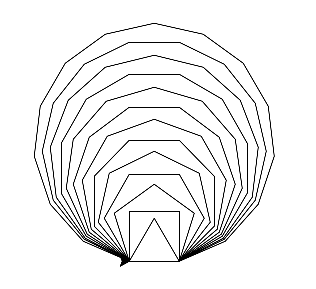
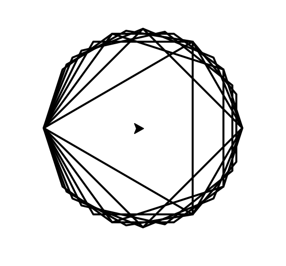

import turtle alebo pre skrátený zápis:
import turtle as timport random
t.bgcolor('black')
t.speed(0)
for x in range(360):
farba = 'white'
zv = x % 6
if zv == 0:
farba = 'red'
elif zv == 1:
farba = 'purple'
elif zv == 2:
farba = 'blue'
elif zv == 3:
farba = 'green'
elif zv == 4:
farba = 'orange'
elif zv == 5:
farba = 'yellow'
t.pencolor(farba)
t.forward(x)
t.left(59)t.pensize(x/100 + 1)Vyskúšaj aj iné varianty (trošku iný uhol, iná dĺžka, iná hrúbka, ...)
for i in range(100):
t.fd(i*2)
t.lt(360 / 10)for a in range(100):
t.fd(a*4)
t.lt(360 / 4)for i in range(100):
t.fd(10 + i)
t.lt(360 / 20)uhol = random.randint(30, 170)
print('spirala s uhlom', uhol)
for i in range(3, 300, 3):
t.fd(i)
t.rt(uhol)for uhol in range(1, 3000):
t.fd(8)
t.rt(uhol)t.rt(uhol + 0.1)t.rt(uhol + 0.333)t.pensize(5)
t.pencolor('red')
for i in range(10000):
t.setheading(random.randint(0, 359))
t.fd(10)
if t.xcor()**2 + t.ycor()**2 > 50**2:
t.fd(-10)distance() vypočíta vzdialenosť korytnačky od nejakého bodu.
Naprogramuj korytnačku, nech sa náhodne prechádza po ploche a podľa
vzdialenosti od vybraného bodu jej zmeň farbu:
t.bgcolor('navy')
t.pensize(5)
t.pencolor('yellow')
for i in range(10000):
t.seth(random.randint(0, 359))
t.fd(10)
if t.distance(40, 0) > 100 or t.distance(100, 0) < 100:
t.fd(-10)
